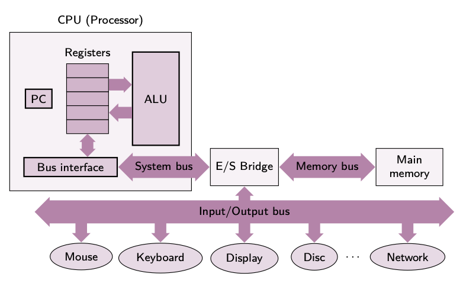
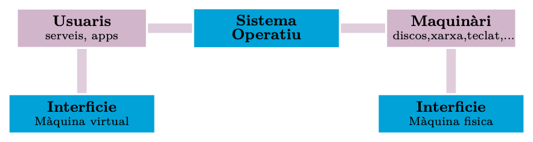
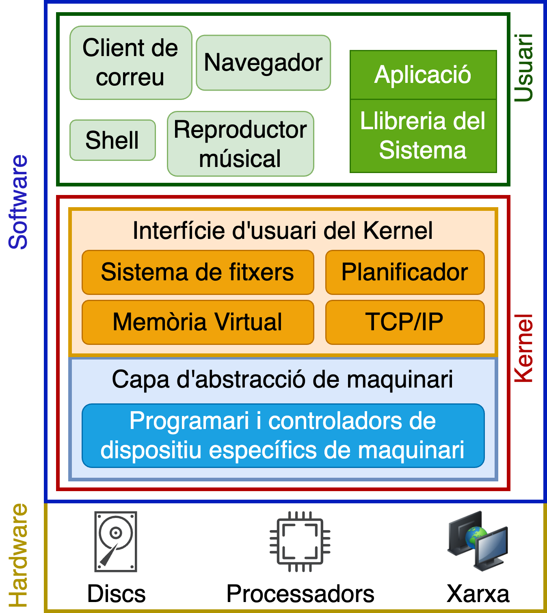
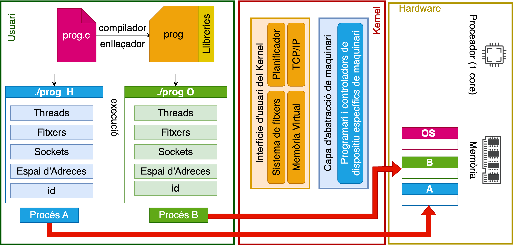
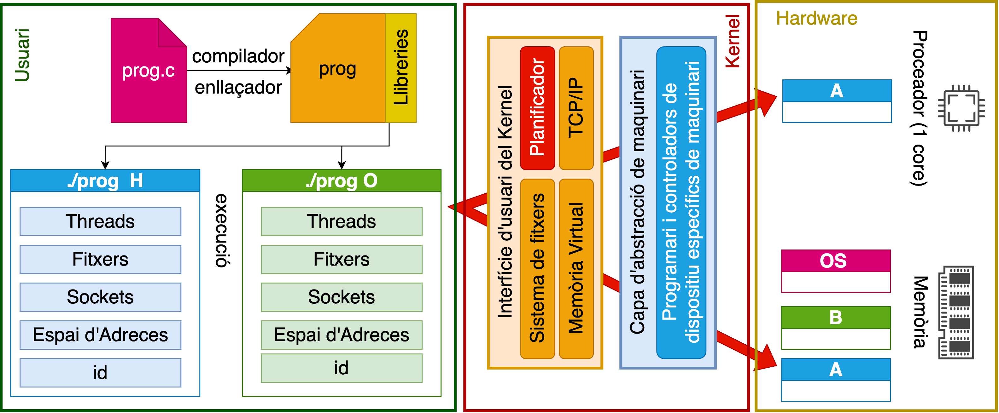
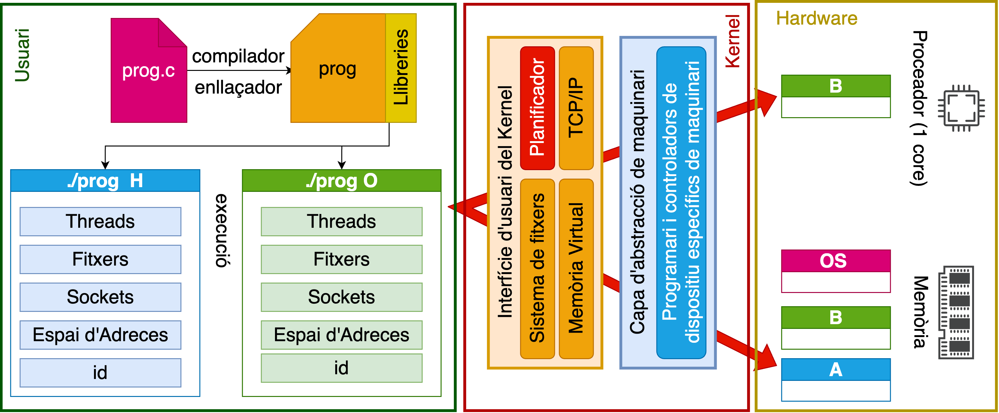

Introducció
Unitat 1 · Sistemes Operatius (SO)
Introducció als Sistemes Informàtics
Un sistema informàtic és la interconnexió d’elements de hardware, software i usuaris que treballen conjuntament per aconseguir un objectiu comú.
Els components hardware són els dispositius físics del sistema, com el processador, la memòria, el disc dur, el teclat, el ratolí, la impressora, etc.
Els components software són els programes que s’executen en el sistema, com el sistema operatiu, els programes d’aplicació, els controladors de dispositius, etc.
A continuació es mostra un esquema simplificat d’un sistema informàtic.

En la figura, es representen els components hardware d’un sistema informàtic, com la CPU, la memòria, el disc dur, el teclat, el ratolí o la xarxa. Aquests components interactuen amb el programari, com el sistema operatiu, les aplicacions o els controladors de dispositius, per proporcionar funcionalitats als usuaris. La CPU, per exemple, processa les instruccions, mentre que la memòria guarda la informació temporalment, i els dispositius d’entrada/sortida (com el teclat o el ratolí) permeten la interacció amb els usuaris.
Sistema Operatiu: Intermediari
El sistema operatiu actua com a mediador entre el hardware i el software, gestionant els recursos i proporcionant una interfície perquè les aplicacions puguin comunicar-se amb els components físics. Això permet que els usuaris i els desenvolupadors no hagin de preocupar-se per les particularitats del hardware, ja que el sistema operatiu s’encarrega d’abstreure’n la complexitat.

En la figura, es mostra com el sistema operatiu actua com a intermediari entre els components hardware i software d’un sistema informàtic.
Sistemes Paral·lels i la Multitasca
El món es comporta com un gran sistema paral·lel, on molts processos i activitats es duen a terme simultàniament. Per tant, els nostres sistemes informàtics també han de poder actuar en paral·lel per ser eficients i competents. No ens serveix un sistema que només pugui fer una cosa alhora.
En informàtica, aquest comportament s’aconsegueix gràcies a la multitasca, que permet que un sistema informàtic executi múltiples processos alhora, optimitzant els recursos disponibles. Això és especialment important en entorns moderns, on un únic ordinador pot executar diverses aplicacions i serveis al mateix temps.
Sistemes Heterogenis
Els sistemes informàtics moderns són heterogenis i es componen d’una àmplia gamma de components de hardware i software, cada un amb les seves pròpies característiques. Per exemple:
Arquitectures de CPU: Inclouen processadors de fabricants com Intel, AMD i ARM, amb diferències significatives en els conjunts d’instruccions, mecanismes de seguretat i vulnerabilitats específiques. També s’han de considerar arquitectures especialitzades com RISC-V i altres dissenys emergents.
Memòria: Com RAM (memòria d’accés aleatori) de diferents tipus DDR (DDR3, DDR4, DDR5), ROM (memòria només de lectura), memòria cache (L1, L2, L3) i memòries persistents com la memòria flash. Cada tipus de memòria presenta diferents velocitats, capacitat i latència, i s’ha de gestionar de manera eficient per optimitzar el rendiment del sistema.
Discs durs: Inclouen HDD (discos durs tradicionals), SSD (unitats d’estat sòlid), NVMe (Non-Volatile Memory Express) i dispositius de memòria externa com USB i targetes de memòria. En un sistema es podem trobar diferents tipus de discos durs, cadascun amb característiques específiques en termes de velocitat, capacitat i durabilitat. A més, si un disc falla, s’ha de poder migrar les dades a un altre disc sense perdre la informació.
Dispositius d’entrada/sortida: Com teclats, ratolins, pantalles, impressores, escàners, càmeres, micròfons, altaveus, etc. Cada dispositiu d’entrada/sortida té les seves pròpies interfícies i controladors, i s’ha de poder gestionar de manera eficient per garantir una interacció fluida amb l’usuari.
Xarxes: Inclouen adaptadors Ethernet, targetes Wi-Fi, routers, commutadors, servidors, dispositius IoT (Internet of Things) i altres components de xarxa.
Sensors i dispositius integrats: Com sensors de temperatura, humitat, acceleròmetres, giroscopis, GPS, etc. Aquests dispositius poden ser utilitzats per recopilar dades ambientals, geolocalització, moviment i altres dades que poden ser crítiques per a la seguretat i el funcionament del sistema.
Firmware: Com BIOS/UEFI, microcontroladors i altres sistemes de baix nivell. El firmware és el software integrat en components de hardware que controla les funcions més bàsiques del sistema, com l’arrencada, la configuració i la gestió de dispositius. Les vulnerabilitats en el firmware poden ser crítiques, ja que poden permetre als atacants accedir a les funcions més profundes del sistema.
Reflexions
- Imagineu que un programador hagués de conèixer en detall el funcionament de tots aquests components hardware per escriure un programa.
- Seria pràcticament impossible escriure programes eficients sense l’ajuda d’una capa que abstrau la complexitat del maquinari, com fa el sistema operatiu.
- Imagineu que un programador hagués de desenvolupar un programa diferent per a cada combinació de components hardware.
- Abans dels sistemes operatius moderns, això era una realitat. Ara, gràcies a l’abstracció que proporciona el sistema operatiu, els desenvolupadors poden escriure programes que funcionen en múltiples dispositius sense haver de preocupar-se per les diferències del hardware.
Per tant, un sistema informàtic és un sistema complex format per components heterogenis i interconnectats, que funcionen en paral·lel i de forma coordinada. On el sistema operatiu actua com a cervell i permet als usuaris i desenvolupadors interactuar amb el sistema de manera eficient i intuïtiva.
Sistema Operatiu: Conceptes bàsics
Un sistema operatiu és un programa que actua com a intermediari entre l’usuari i el sistema informàtic. El seu objectiu principal és proporcionar als usuaris una interfície simple, neta i coherent del sistema, i gestionar tots els recursos del mateix.
Gràcies al sistema operatiu, els programadors poden escriure programes que s’executin en qualsevol sistema informàtic, independentment dels seus components hardware, i sense necessitat de conèixer-ne els detalls tècnics.
Definició formal d’un sistema operatiu
Un programa encarregat de l’assignació dels recursos d’un sistema informàtic, així com del control i supervisió de l’execució correcta de les diferents aplicacions i programes.
Un programa que controla tots els recursos del sistema, proporcionant la base sobre la qual es poden escriure i executar altres programes.
Funcions d’un sistema operatiu
El sistema operatiu compleix quatre funcions essencials que podem destacar:
Proporcionar una interfície d’usuari: El sistema operatiu ofereix una interfície que permet als usuaris interactuar amb el sistema informàtic de manera intuïtiva i eficient. Aquesta interfície pot ser gràfica (GUI) o de línia de comandes (CLI).
Proporcionar una plataforma d’execució: El sistema operatiu actua com a plataforma per a l’execució de programes i aplicacions. Proporciona un entorn d’execució segur i aïllat per a les aplicacions.
Gestionar els recursos del sistema: El sistema operatiu gestiona els recursos del sistema, com la memòria, la CPU, el disc dur, la xarxa, etc. Això inclou la planificació de processos, la gestió de la memòria, la gestió de l’emmagatzematge i la gestió de la xarxa.
Proporcionar portabilitat: El sistema operatiu permet que els programes s’executin en diferents sistemes informàtics sense necessitat de modificacions. Això permet als programadors escriure programes una sola vegada i executar-los en múltiples plataformes.
Tipus de sistemes operatius
Pròposit general: Windows, Linux, MacOS.
- Multitasca, multiusuari, multiprocessador.
- Exemples: Windows 11, Ubuntu, MacOS Catalina.
Servidors: Unix, Linux.
- Optimitzats per a Alt Rendiment: Dissenyats per gestionar grans volums de dades i usuaris simultanis.
- Dedicats a tasques específiques com ara servidors web, servidors de correu, servidors de bases de dades, etc.
- Exemples: Debian, AlmaLinux, FreeBSD.
Dispositius mòbils: iOS, Android.
- Optimitzats per a Dispositius Táctils: Interfícies i funcionalitats adaptades per a l’ús mòbil.
Sistemes encastats: RTOS (Real-Time Operating System).
- Optimitzats per a sistemes encastats i temps real.
- Exemples: FreeRTOS, VxWorks, QNX.
Sistemes Especifics: Sistemes operatius optimitzats per a tasques específiques, com ara sistemes de control de trànsit, sistemes de navegació, sistemes de televisió digital, etc.
Unikernels: Sistemes operatius optimitzats per a aplicacions específiques.
- Exemples: MirageOS, OSv, ClickOS.
Nivells en un Sistema Informàtic
La figura següent mostra les diferents capes d’un sistema informàtic. Aquestes capes es divideixen en dos grans grups:
En groc es representen els recursos físics (hardware), que inclouen components com la CPU, la memòria i els dispositius d’entrada/sortida.
En blau es representen els components software, amb especial atenció al sistema operatiu, que s’executa tant en mode usuari (verd) com en mode sistema (vermell), també conegut com a mode kernel.

Funció del Mode Usuari i el Mode Sistema
Els programes d’aplicació (com el client de correu, el navegador web o el reproductor musical) s’executen en mode usuari, que és un entorn restringit on les aplicacions no poden accedir directament al maquinari ni a altres parts crítiques del sistema. Per garantir la seguretat i estabilitat del sistema, les aplicacions han de fer crides al sistema per accedir a funcionalitats gestionades pel sistema operatiu, com la gestió de fitxers o la comunicació per xarxa.
El mode sistema (o mode kernel) és on s’executen les parts més crítiques del sistema operatiu, com la gestió de recursos, els controladors de dispositius i altres serveis fonamentals. Aquest mode té accés complet al maquinari, i és aquí on es prenen decisions importants sobre l’ús de recursos, l’assignació de memòria i la planificació de processos.
Components del Sistema Operatiu
El sistema operatiu es divideix en diverses capes, cadascuna responsable de funcions específiques.
L’interfície d’usuari del sistema operatiu inclou serveis que poden ser utilitzats pels programes d’aplicació. Aquests serveis faciliten la interacció entre el programari d’usuari i el maquinari del sistema. Alguns exemples d’aquests serveis són:
Sistema de fitxers: Permet als programes crear, llegir, escriure i esborrar fitxers d’una manera organitzada. Per exemple, un programa de processament de textos que guarda un document al disc dur interactua amb el sistema de fitxers per dur a terme aquesta operació.
Planificació de processos: El sistema operatiu decideix quin procés s’executa en cada moment. Per exemple, en un entorn multitarea, el sistema operatiu distribueix el temps de CPU entre múltiples programes en execució com un navegador web i un editor de text, assegurant que cap d’ells bloquegi els altres.
Memòria virtual: Aquesta funció permet que els programes utilitzin més memòria del que hi ha físicament disponible. Per exemple, si un programa necessita més memòria del que la RAM pot oferir, el sistema operatiu utilitza part del disc dur com a memòria virtual per simular un espai de memòria més gran.
Protocol TCP/IP: Proporciona serveis de comunicació en xarxa, permetent que els programes es comuniquin a través d’internet. Per exemple, un navegador utilitza aquest servei per enviar i rebre dades d’un servidor web.
Capa d’abstracció de maquinari: Proporciona una interfície que amaga la complexitat del maquinari amb l’objectiu de facilitar el desenvolupament d’aplicacions.
Per exemple, un programador no necessita saber com funciona un disc dur específic; el sistema operatiu ofereix una interfície que permet als programes accedir al disc d’una manera consistent, independentment del model o fabricant del dispositiu.
Components en l’Espai d’Usuari
En l’espai d’usuari, també hi trobem diversos elements importants que faciliten la interacció amb el sistema operatiu:
Les llibreries del sistema són col·leccions de funcions que permeten als programes accedir als serveis del sistema operatiu. Quan un programa necessita realitzar una operació privilegiada, com accedir a un fitxer o comunicar-se amb la xarxa, utilitza aquestes llibreries per fer una crida al sistema.
Exemple: Si un programa vol llegir un fitxer, pot utilitzar funcions de la llibreria
stdio.hper fer-ho. Aquesta llibreria amaga els detalls tècnics i ens permet interactuar amb el maquinari de manera més senzilla. En aquest cas,fopen()és una funció de la llibreriastdio.hque obre un fitxer per a lectura o escriptura.Els programes d’usuari són els programes que els usuaris executen directament, com navegadors web, editors de text o jocs. Aquests programes fan ús dels serveis del sistema operatiu mitjançant les llibreries del sistema i poden interactuar amb l’usuari o altres programes.
Exemple: Un editor de text com VS Code interactua amb el sistema operatiu per obrir fitxers, mostrar contingut a la pantalla i rebre entrades de l’usuari (com tecles o clics de ratolí).
El shell és un programa especial que permet als usuaris interactuar directament amb el sistema operatiu a través d’una interfície de línia de comandes (CLI). El shell interpreta les ordres de l’usuari i les tradueix en crides al sistema operatiu per dur a terme accions com llistats de directoris, copiar fitxers o executar programes.
Exemple: Quan un usuari introdueix l’ordre
lsen un terminal Unix, el shell tradueix aquesta ordre en una crida al sistema que llista els fitxers d’un directori.
Per tant el sistema operatiu ens ofereix de forma transparent, usable, portable i efiicient una sèrie de serveis que ens permeten interactuar amb el sistema informàtic:
- Control d’usuaris i aplicacions.
- Gestió d’usuaris i aplicacions.
- Gestió de la memòria.
- Sistema de fitxers.
- Planificadors.
- Eines de xarxa.
- …
Funcions d’un Sistema Operatiu
El sistema operatiu actua com a àrbitre entre els diferents programes i usuaris que competeixen pels recursos del sistema i com a il·lusionista que proporciona una abstracció dels recursos físics per simular recursos il·limitats això s’aconsegueix gràcies a la virtualització.
La virtualització és una tecnologia que permet crear una versió virtual d’un recurs físic o lògic, com una màquina virtual, un sistema de fitxers o una xarxa. Molts autors defineixen un Sistema Operatiu com una màquina virtual que proporciona una interfície d’abstracció del maquinari real.
1. Il·lusionisme
El sistema operatiu proporciona una abstracció dels recursos físics. Aquesta capa d’abstracció permet als usuaris i desenvolupadors treballar amb conceptes lògics en lloc de utilitzar directament els recursos físics del sistema.
Interfície per als recursos físics: El sistema operatiu crea una interfície uniforme per als recursos físics, com el disc dur, la memòria i els dispositius d’entrada/sortida. A través d’aquesta interfície, els usuaris i aplicacions poden interactuar amb els recursos del sistema sense necessitat de conèixer el funcionament intern del maquinari.
Per exemple: Quan un usuari treballa amb un fitxer, no pensa en blocs de dades en un disc dur. El sistema operatiu tradueix les operacions de fitxers (com crear, llegir o escriure) en operacions de blocs de disc. Això fa que la gestió d’arxius sigui molt més intuïtiva per a l’usuari. En el codi següent, es mostra com un programa pot obrir un fitxer, escriure-hi dades i tancar-lo sense haver de preocupar-se dels detalls de com s’emmagatzemen les dades al disc dur. Utilitza funcions de la llibreria
stdio.hque proporcionen una interfícieFILEi funcions comfopen(),fprintf()ifclose()per interactuar amb el fitxer.#include <stdio.h> int main() { // Crear i obrir un fitxer per escriptura FILE *file = fopen("example.txt", "w"); if (file == NULL) { perror("Error obrint el fitxer"); return 1; } // Escriure dades al fitxer fprintf(file, "Hola, món!\n"); // Tancar el fitxer fclose(file); // Reobrir el fitxer per lectura file = fopen("example.txt", "r"); if (file == NULL) { perror("Error obrint el fitxer"); return 1; } // Llegir i imprimir dades del fitxer char buffer[100]; while (fgets(buffer, sizeof(buffer), file) != NULL) { printf("%s", buffer); } // Tancar el fitxer fclose(file); return 0; }Multiplexació de recursos (temps i espai): El sistema operatiu gestiona els recursos del sistema a través de la multiplexació, una tècnica que permet compartir un mateix recurs entre múltiples usuaris o processos de manera simultània o intercalada.
- Multiplexació en el temps: En un sistema monoprocessador, el sistema operatiu (SO) divideix el temps de CPU entre diversos processos. Això es fa mitjançant la tècnica de canvi de context, que permet al processador alternar ràpidament entre diferents tasques, creant la il·lusió que totes s’estan executant simultàniament.
Exemple: En un sistema amb múltiples aplicacions obertes (com un navegador web i un editor de text), el sistema operatiu gestiona el temps de CPU assignant petites fraccions de temps a cada aplicació. Aquest procés és tan ràpid que sembla que totes les aplicacions s’executin al mateix temps.
Un exemple pràctic senzill de multiplexació en el temps es pot veure en un sistema operatiu que alterna l’execució de dos processos senzills (A i B). Per simular-ho en un sistema Unix/Linux, es pot utilitzar el següent codi que imprimeix informació sobre el procés actual i fa una pausa abans de continuar en un bucle infinit.
#include <stdio.h> #include <unistd.h> int main() { while (1) { printf("Process %d is running\n", getpid()); sleep(1); // Simula una pausa abans de continuar } return 0; }Per compilar i executar aquest codi, seguiu aquests passos:
$ vi process.c # Copieu el codi anterior en un fitxer process.c $ gcc process.c -o process $ ./processSi executeu aquest codi, veureu com el procés imprimeix informació sobre el seu PID (identificador de procés) i es pausa durant un segon abans de continuar.
$ ./process Process 1234 is running Process 1234 is running Process 1234 is running ...Si executeu aquest codi dues vegades en el mateix terminal, obtindreu una sortida com la següent:
$ ./process & ./process & [1] 1234 [2] 1235 Process 1234 is running Process 1235 is running Process 1234 is running Process 1235 is running ...En aquest cas, el sistema operatiu alterna l’execució entre els dos processos, permetent que s’executin simultàniament. Aquesta tècnica de** multiplexació en el temps** permet que múltiples processos comparteixin el temps de CPU disponible.
Les figures següents mostren com el sistema operatiu alterna l’execució entre dos processos (A i B) mitjançant la tècnica de multiplexació en el temps.
- Creació de dos processos (A i B) : El sistema operatiu crea dos processos (A i B) i els carrega a la memòria.

Creació de processos - El planificador del sistema elegeix un dels processos (A) per a l’execució i carrega les seves dades a la CPU.

Execució de processos - El procés A s’executa durant un temps determinat (1 segon) i després es posa en estat d’espera. El planificador elegirà ara el procés B per a l’execució.

Execució de processos Observació: Si elimineu la crida
sleep(1)del codi, els processos s’executaran tan ràpidament que no podreu veure la sortida clara. Això és degut a la velocitat d’execució i la rapidesa amb què el sistema operatiu alterna entre els processos. A més, no es pot assegurar que el sistema operatiu alterni entre els processos en un ordre específic; això depèn de la planificació del sistema operatiu. És possible que un procés s’executi més vegades que l’altre, depenent de la càrrega del sistema i d’altres factors. Aquest fenomen es coneix com indeterminisme.Per tant, el sistema operatiu alterna utiltizant la tècnica de canvi de context per permetre que els dos processos s’executin simultàniament. Els dos processos creuen que tenen accés exclusiu a la CPU, però en realitat comparteixen el temps de CPU disponible.
- Multiplexació en l’espai: El sistema operatiu (SO) divideix l’espai de memòria entre els diferents processos que s’executen. Cada procés té assignada una part de la memòria física, però utilitza una memòria virtual que li dóna la il·lusió de tenir més memòria disponible. Això permet a cada aplicació creure que té accés exclusiu a la memòria, mentre que el SO gestiona l’accés real.
Exemple: En un sistema amb 4 GB de RAM, el sistema operatiu pot utilitzar la tècnica de paginació per permetre que múltiples programes ocupin més espai del que hi ha disponible físicament, desplaçant parts no utilitzades a un fitxer de paginació en el disc dur.
#include <stdio.h> #include <stdlib.h> int main() { int *ptr = malloc(1024 * 1024 * sizeof(int)); // Simula una gran quantitat de memòria if (ptr == NULL) { perror("No hi ha prou memòria"); return 1; } printf("Memòria assignada\n"); free(ptr); // Alliberar la memòria return 0; }En aquest codi, es reserva una gran quantitat de memòria (1 GB) mitjançant la funció
malloc(). Encara que el sistema només disposi de 4 GB de RAM, el sistema operatiu pot gestionar la memòria virtual per permetre que aquesta operació s’executi sense problemes. Quan la memòria ja no es necessita, es pot alliberar amb la funciófree(). Aquesta tècnica permet als programes utilitzar més memòria del que hi ha físicament disponible, millorant l’eficiència del sistema.Un altre exemple que il·lustra la multiplexació en l’espai és el següent codi que mostra com dos processos poden compartir la mateixa adreça de memòria:
#include <unistd.h> #include <stdio.h> #include <stdlib.h> #include <assert.h> int main(int argc, char *argv[]) { int *p = malloc(sizeof(int)); assert(p != NULL); printf("(%d) address pointed to by p: %p\n", getpid(), p); *p = 0; while (1) { *p = *p + 1; printf("(%d) p: %d\n", getpid(), *p); } return 0; }Aquest codi crea un procés que reserva memòria per a una variable
pi incrementa el seu valor de manera indefinida.Si compiles i executes aquest codi, podràs veure com cada procés imprimeix la mateixa adreça de memòria, però amb valors que augmenten de manera independent:
$ gcc memory.c -o memory $ ./memory (1234) address pointed to by p: 0x7f8b1c000010 (1234) p: 1 (1234) p: 2 (1234) p: 3 ...Si executes aquest codi dues vegades en el mateix terminal:
$ ./memory & ./memory & [1] 1234 [2] 1235 (1234) address pointed to by p: 0x7f8b1c000010 (1235) address pointed to by p: 0x7f8b1c000010 (1234) p: 1 (1235) p: 1 (1234) p: 2 (1235) p: 2 (1234) p: 3 (1235) p: 3 ...En aquest cas, els dos processos comparteixen la mateixa adreça de memòria, però cada un té la il·lusió que té accés exclusiu a la memòria. Aquesta tècnica de multiplexació en l’espai permet als processos utilitzar la memòria de manera eficient, sense interferir entre ells.
Optimització del rendiment del hardware: Els sistemes operatius poden optimitzar l’ús dels recursos hardware per maximitzar el rendiment. Això inclou tasques com la gestió intel·ligent de la memòria, la planificació de l’ús de la CPU o la distribució de la càrrega en entorns de múltiples processadors.
Exemple: Els sistemes MacOS són altament optimitzats per funcionar amb components de hardware específics dels Macs, aconseguint un rendiment més eficient que sistemes com Windows, que han de suportar una gran varietat de configuracions de hardware.
2. Arbitratge
El sistema operatiu actua com un àrbitre entre els diferents processos que competeixen pels recursos del sistema. Aquest arbitratge assegura que els recursos s’utilitzin de manera justa i eficient, evitant conflictes i millorant el rendiment general.
Gestió de recursos: El SO decideix com distribuir els recursos limitats (com la CPU, la memòria o dispositius d’E/S) entre els diferents programes que s’executen. Això inclou la planificació de processos, la gestió de la memòria i el control de l’accés als dispositius de hardware.
Exemple: Quan diversos processos volen accedir a la impressora simultàniament, el sistema operatiu gestiona una cua d’impressió, decidint quin procés pot utilitzar la impressora i en quin ordre, assegurant que els processos s’executen en funció de la seva prioritat o temps d’espera.
Evitació de conflictes i bloquejos: Un altre aspecte important de l’arbitratge és evitar els bloquejos (deadlocks), que ocorren quan dos o més processos es queden esperant indefinidament que un recurs es faci disponible. El sistema operatiu utilitza tècniques com la prevenció de bloquejos o la detenció de bloquejos per gestionar aquests conflictes.
Exemple: Considerem un escenari on dos processos, A i B, necessiten accedir a dos recursos compartits, X i Y, per completar les seves operacions. Suposem que el recurs X és una impressora i el recurs Y és una memòria USB. El procés A necessita imprimir un document i després guardar-lo a la memòria USB, mentre que el procés B necessita guardar un document a la memòria USB i després imprimir-lo.
Si el procés A adquireix primer la impressora (recurs X) i després intenta accedir a la memòria USB (recurs Y), i al mateix temps el procés B adquireix primer la memòria USB (recurs Y) i després intenta accedir a la impressora (recurs X), es produeix una situació de bloqueig coneguda com a “deadlock”. En aquest cas, el procés A espera indefinidament per accedir al recurs Y que el procés B ja ha bloquejat, mentre que el procés B espera indefinidament per accedir al recurs X que el procés A ja ha bloquejat. Com a resultat, ambdós processos es bloquegen mútuament i cap d’ells no pot completar la seva tasca. El SO ha de detectar aquesta situació i prendre mesures per evitar-la. Una solució, seria elimanar el procés B, esperar la finalització de A i tornar a executar B.
Mètriques d’avaluació dels Sistemes Operatius
Els sistemes operatius són complexos i han de satisfer una sèrie de requisits en funció de les seves finalitats i entorns d’ús. Com satisfer tots aquests requisits és una tasca difícil, es fan servir una sèrie de mètriques per avaluar el rendiment i la qualitat dels sistemes operatius en funció de diferents mètriques.
Overhead: Quantitat de recursos addicionals que un sistema operatiu utilitza per gestionar els recursos del sistema. Aquest overhead pot afectar el rendiment general del sistema, ja que els recursos que s’utilitzen pel sistema operatiu no estan disponibles per a les aplicacions.
Fairness: Capacitat del sistema operatiu de distribuir els recursos de manera justa entre els diferents processos. Un sistema operatiu just assegura que tots els processos tinguin accés als recursos del sistema de manera equitativa, sense privilegiar uns processos sobre altres.
Temps de resposta: Temps que triga un sistema en respondre a una sol·licitud de l’usuari. Un sistema operatiu eficient ha de ser capaç de respondre ràpidament a les sol·licituds dels usuaris, minimitzant el temps de resposta i millorant la interactivitat del sistema.
Throughput: Quantitat de treball que un sistema pot realitzar en una unitat de temps. Un sistema operatiu amb un alt throughput és capaç de processar un gran nombre de tasques simultàniament, millorant l’eficiència del sistema i reduint els temps d’espera dels usuaris.
Fiabilitat: Capacitat de mantenir-se operatiu durant llargs períodes de temps sense fallar. Un sistema fiable ha de ser capaç de recuperar-se de fallades inesperades i mantenir la integritat dels recursos del sistema.
Disponibilitat: Capacitat de mantenir-se operatiu i accessible per als usuaris en tot moment. Un sistema altament disponible ha de ser capaç de gestionar càrregues de treball variables i mantenir la seva funcionalitat en situacions de sobrecàrrega o fallades.
Predictibilitat: Capacitat de mantenir un comportament consistent i previsible en diferents situacions. Un sistema previsible ha de ser capaç de respondre de manera coherent a les sol·licituds dels usuaris i mantenir un rendiment estable en tot moment.
Integritat: Capacitat de protegir els recursos del sistema contra atacs i amenaces externes. Un sistema amb una bona integritat ha de ser capaç de mantenir la confidencialitat, la integritat i la disponibilitat dels recursos del sistema en tot moment.
Privacitat: Capacitat de protegir les dades dels usuaris i garantir la confidencialitat de la informació personal. Un sistema amb una bona privacitat ha de ser capaç de protegir les dades dels usuaris contra l’ús no autoritzat i garantir la seguretat de la informació.
Seguretat: Capacitat de protegir els recursos del sistema contra atacs i vulnerabilitats. Un sistema segur ha de ser capaç de detectar i respondre a amenaces de seguretat, com ara virus, malware o atacs cibernètics, i mantenir la integritat del sistema en tot moment.
Escalabilitat: Capacitat de créixer i adaptar-se a les necessitats dels usuaris. Un sistema escalable ha de ser capaç de gestionar càrregues de treball variables i augmentar la seva capacitat de processament i emmagatzematge segons sigui necessari.
Portabilitat: Capacitat de ser executat en diferents plataformes i arquitectures de maquinari. Un sistema portàtil ha de ser capaç de funcionar en una àmplia varietat de dispositius i entorns sense necessitat de modificacions.
Disseny de Sistemes Operatius
El disseny d’un sistema operatiu (SO) és una tasca complexa que requereix la creació d’una sistema robust, segur i eficient per gestionar el maquinari i proporcionar serveis als usuaris i aplicacions. Els dissenyadors de sistemes operatius han de tenir en compte una varietat de factors per assegurar que el sistema compleixi amb els requisits de rendiment, seguretat i funcionalitat ,maximitzant o minimizant les mètriques d’avaluació discutides anteriorment.
Complexitat de la Programació Distribuïda: Els sistemes operatius han de gestionar entorns distribuïts. Això implica coordinar múltiples nodes, mantenir la coherència de dades i gestionar les comunicacions en xarxa. Aquesta complexitat es veu amplificada en sistemes com el núvol (cloud computing).
Complexitat de la Programació Concorrent: Els sistemes operatius han de gestionar múltiples processos i fils d’execució de manera eficient. Això implica la gestió de la sincronització, la comunicació i la compartició de recursos entre els processos.
Complexitat pel Context (Mòbil, IoT, Servidors): Els SO per a dispositius mòbils, Internet de les Coses (IoT) i servidors tenen requisits específics que influeixen en el seu disseny. Per exemple, iOS i Android han de ser àgils i adaptatius per a diverses condicions d’ús (interficies tàctils, usuaris en constant moviment), mentre que sistemes com Linux per a servidors han de gestionar càrregues elevades i proporcionar alta disponibilitat.
Complexitat per la Heterogeneïtat del Hardware: La diversitat en els components de maquinari presenta reptes significatius en la compatibilitat i el rendiment. Els dissenyadors han de desenvolupar sistemes operatius que puguin adaptar-se a diverses arquitectures de maquinari, cosa que pot requerir solucions innovadores per garantir un rendiment òptim. Avui en dia, tenim processadors de diferents fabricants (Intel, AMD, ARM), xarxes de comunicació diverses (Ethernet, Wi-Fi, 5G) i dispositius d’emmagatzematge amb tecnologies variades (SSD, HDD, cintes magnètiques). Els SO han de ser capaços de gestionar aquesta diversitat de manera eficient.
Portabilitat: La capacitat d’un SO per ser executat en diferents plataformes de maquinari és essencial. Un exemple de portabilitat és Java, amb la seva màquina virtual (JVM) que permet executar aplicacions en diverses plataformes sense necessitat de recompilació. Els contenidors Docker són un altre exemple de portabilitat, ja que permeten als desenvolupadors executar aplicacions en entorns aïllats sense dependències de la plataforma.
Seguretat: Els dissenyadors han de tenir en compte les vulnerabilitats de seguretat, com ara atacs de dia zero, malware i vulnerabilitats de xarxa. Sistemes com SELinux i AppArmor ofereixen funcions de seguretat avançades per protegir els sistemes contra amenaces. Per exemple, al 2024, va sorgir una vulnerabilitat que afectava gairebé a tots els sistemes linux. Aquesta vulnerabilitat es coneix com en xz-utils identificada com CVE-2024-3094. Podeu trobar més informació sobre aquesta vulnerabilitat a CVE-2024-3094. Aquesta vulnerabilitat permetia que un atacant executés codi maliciós amb privilegis elevats mitjançant un fitxer especialment manipulat que explota una debilitat en el procés de descompressió de fitxers.
Eficiència: Els SO han de ser eficients en l’ús dels recursos del sistema, com la CPU, la memòria i el disc dur. Això implica optimitzar els algorismes i les estructures de dades per garantir un rendiment òptim.
Escalabilitat: Els SO han de ser capaços de créixer amb les necessitats del sistema, ja sigui en termes de càrrega de treball, nombre d’usuaris o mida de la xarxa. Això implica dissenyar sistemes que puguin adaptar-se a canvis en les condicions del sistema i mantenir un rendiment estable en tot moment.
Mantenibilitat: Els SO han de ser fàcils de mantenir i actualitzar per garantir un funcionament continu i sense interrupcions. Això implica dissenyar sistemes amb una arquitectura clara i modular que permeti fer canvis i millores sense afectar la funcionalitat existent.
Compatibilitat: Els SO han de ser compatibles amb una àmplia gamma de programari i dispositius per garantir una transició suau entre versions i maximitzar l’ús de programari existent. Això implica dissenyar sistemes que puguin interactuar amb una varietat de dispositius i aplicacions sense problemes.
Usabilitat: Els SO han de ser fàcils d’utilitzar i entendre per als usuaris, amb una interfície clara i intuïtiva que faciliti la interacció amb el sistema. Això implica dissenyar sistemes amb una interfície d’usuari coherent i funcionalitats accessibles per a tots els usuaris.
Adaptabilitat: Els SO han de ser capaços d’adaptar-se a canvis en l’entorn del sistema, com ara actualitzacions de programari, canvis en la càrrega de treball o noves tecnologies. Això implica dissenyar sistemes que puguin evolucionar amb el temps i mantenir la seva funcionalitat en situacions canviants.
Tolerància a Fallades: Els SO han de ser tolerants a fallades per garantir la integritat del sistema en cas de problemes. Això implica dissenyar sistemes que puguin recuperar-se de fallades inesperades i mantenir la seva operació en situacions advers
Transparència: Els SO han de ser transparents per als usuaris i desenvolupadors, amb una interfície clara i consistent que permeti interactuar amb el sistema de manera senzilla. Això implica dissenyar sistemes amb una interfície d’usuari coherent i funcionalitats accessibles per a tots els usuaris.
Cas pràctic: Vehicle autònom
Imaginem que estem dissenyant un sistema operatiu per a un vehicle autònom. Quins serien els requisits clau que hauríem de tenir en compte en el disseny del sistema operatiu?
- Seguretat: La seguretat és una prioritat en un vehicle autònom, ja que ha de garantir que el vehicle no pugui ser controlat remotament per un atacant malintencionat. Això implica implementar mesures de seguretat com xifrat de comunicacions, autenticació robusta i protecció contra vulnerabilitats conegudes. A més, s’han de protegir les dades sensibles, com les dades de localització i informació personal dels passatgers.
- Tolerància a fallades: El sistema ha de ser tolerant a fallades, amb mecanismes per detectar, aïllar i recuperar-se de errors. Això implica utilitzar tècniques com la redundància de components i sistemes, així com implementar mecanismes de recuperació i reconfiguració automàtica en cas de fallades. La capacitat de recuperació ha de permetre al vehicle continuar funcionant amb seguretat fins i tot en cas de fallades parcials. Els accidents no poden ser una opció.
- Gestió de recursos: El sistema ha de gestionar eficientment els recursos del vehicle, com la CPU, la memòria i els sensors. Ha de prioritzar les tasques crítiques per a la conducció segura, com la detecció de obstacles i la presa de decisions en temps real, mentre optimitza altres processos per a un rendiment global equilibrat.
- Adaptabilitat: Ha de ser capaç d’adaptar-se a canvis en les condicions de la carretera, com variacions en el clima, el trànsit i l’estat de les carreteres. Això requereix una infraestructura flexible i adaptable que pugui ajustar les estratègies de conducció i la gestió dels recursos en resposta a les condicions dinàmiques.
Cas pràctic: Sistema operatiu d’un telèfon mòbil
Ara, considerem el sistema operatiu d’un telèfon mòbil:
Usabilitat: La interfície ha de ser fàcil d’utilitzar i intuitiva per als usuaris, amb funcionalitats accessibles i una navegació clara. Ha de permetre als usuaris interactuar amb el dispositiu de manera eficaç i senzilla, amb opcions de personalització i configuració per adaptar-se a les preferències de l’usuari.
Compatibilitat: Ha de ser compatible amb una àmplia gamma d’aplicacions i serveis, assegurant-se que les aplicacions funcionin correctament en diferents models de dispositius i versions del sistema operatiu. Això implica la gestió de la compatibilitat amb hardware divers i la integració amb serveis de tercers.
Seguretat de dades: El sistema operatiu ha de protegir la privacitat i la confidencialitat de les dades dels usuaris. Això implica implementar mesures de seguretat com xifrat de dades emmagatzemades i en trànsit, control d’accessos a aplicacions, i actualitzacions de seguretat regulars per abordar vulnerabilitats noves.
Eficiencia energètica: Ha de ser eficient en l’ús de la bateria, optimitzant els processos i serveis per maximitzar l’autonomia. Això pot incloure tècniques com la gestió intel·ligent del consum energètic, l’optimització del rendiment dels processadors i la gestió efectiva de les aplicacions en segon pla.
Rendiment: Ha de proporcionar un rendiment fluït i ràpid, amb temps de resposta mínims per a les accions dels usuaris. Això implica una gestió eficient dels recursos del sistema, incloent la CPU, la memòria RAM i l’emmagatzatge, així com l’optimització de les operacions d’entrada/sortida.
Mobilitat: Ha de ser dissenyat per a la mobilitat, amb funcionalitats com la connexió sense fils, la geolocalització i la integració amb serveis de xarxa mòbil. Això implica la gestió de la connectivitat, la gestió de la xarxa i la integració amb serveis de localització per proporcionar una experiència mòbil completa.
Referències
Modern Operating Systems, Andrew S. Tanenbaum, Herbert Bos, Pearson, 2014.
Operating System Concepts, Abraham Silberschatz, Peter B. Galvin, Greg Gagne, Wiley, 2018.
Operating Systems: Three Easy Pieces, Remzi H. Arpaci-Dusseau, Andrea C. Arpaci-Dusseau, Arpaci-Dusseau Books, 2014.